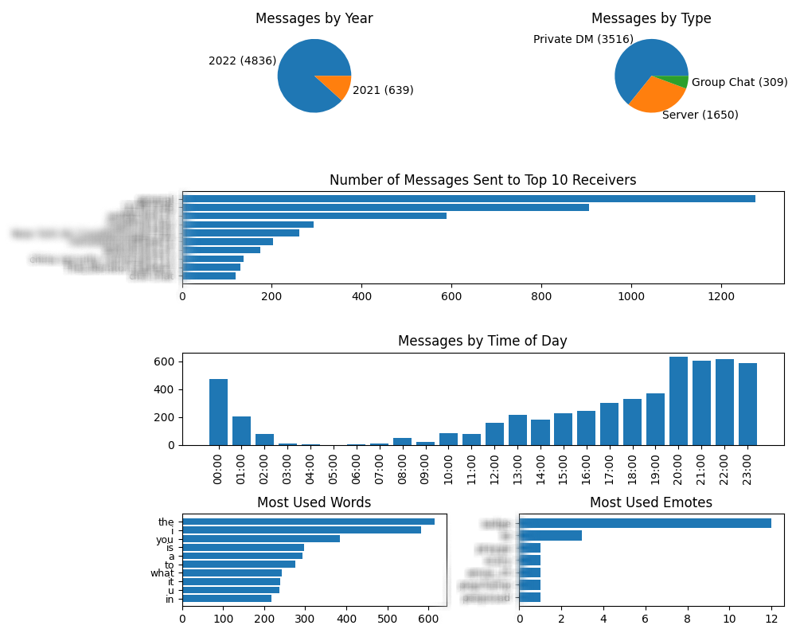

Discord Data Analyzer
Overview
An application which extracts message data and other facts from Discord Data Packages. I got this idea after wondering what my Discord stats were and made this program to find them for me.
Google drive download available
Used tools: Python: Pandas, Pyplot, Tkinter, PyInstaller
Features
- Tells cool facts including:
- Total messages sent
- Most messages sent in a year
- What user you sent the most messages too
- At what hour you've sent the most messages
- What type of message you send the most (Direct message, Group chat, or server)
- What word you use the most in your messages
- How many times you've pinged someone
- How many servers you've joined
- How many attachments you've sent
- Creates a png image of graphs which show:
- Messages by year
- Messages by type
- Top 10 places you've sent messages
- Messages sent by time of day
- Top 10 most used words
- Most used emotes
- Creates a csv file of your message data which includes:
- Text content of the message
- Date
- Who received it
- Number of attachments
Building
The first thing I needed to do was to actually understand the format of these data packages. Unsurprisingly, the messages data is stored in a file called messages.csv. using the Pandas read_csv function, I could get a dataframe of the content fairly easy.
This file then had to be cleaned, with the messages types being translated into what they actually were (Private DMs, Servers, etc.).
With the data ready to go, I started graphing with Pyplot. I experimented with putting the graphs on seperate pngs, but it seemed better to have them all in one image. I also thought it would be cool to have some facts, so I added in calculations for those as well.
With the calculations and graphs working correctly, I built the user interface with Tkinter. I wasn't very experienced with this library so the UI wasn't great. However, it could do the tasks of displaying the calculated facts and accepting a file path, so it served it's purpose.
Once the application was complete and after a little research, I used PyInstaller to turn the code into an application.
Pictures
